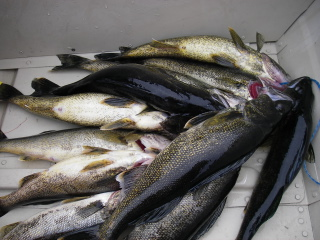

We went on our annual fishing trip last week in May, to the Gouin
Reservoir and stayed at the Nemio Outfitters. From Ottawa, it's a
little over 6 hr drive. The first 250 km is up paved roads, past scenic
rivers and lakes and the last 250 is dirt road, maintained for logging
but mostly used by fishermen.
We could see lots of people bring up boats and lots of signs for
outfitters along the way. Many looked very tempting, alas, so many
lakes, so little time.
We also saw some wildlife in the form of some type of grouse .
The drive up was broken up with some sight seeing and some refreshments.
The hotel in Parent has become a tradition, where we drive up the night before, consume vast amounts of food and beer
and then get an early start into Gouin. This year we were pleased to note, that they are displaying with pride
their one star
qualification from the Quebec tourism office. You know, when you see
this sign, that it guarantees quality. We spend time in the bar,
helping reduce the oversupply of beer which plagues the area. Beer is
in such surplus, that they package it into huge obscene sized bottles.
We did our best to help them out in their time of need. Randy is not
sleeping here,
he is just demonstrating his skill at closing his eyes in every single flash photo I took.
Then we went fishing !
The hookset demo was given by Michael who demonstrated the hookset, the impressive
play by play and the netting all in one. Click here
for the whole excellent fish catching photo sequence, assisted by trusty boat partner Kent.
Michael also put on a nice fashion display, showing why he is the king of the catwalk year after year.
He also demonstrated the correct way to lip a walleye. Turns out the trick is more tongue, less lips which makes alot of sense
if you think about it long enough.

This string on the left, combined with the other boat's stringer turns in to a pile of fillets.
More pics of happy fishermen and their fish.
I wish we could take credit for this but it was not our groups fish.
After we finished filleting our fish, one of the other fishermen in
camp brought in an 8 lb walleye. He claims that they had a much larger
one at the boat but it got off. I believe him. Note how large the fish is
compared to
regular sized fish. Nice walleye for sure.
{kind=link}
{kind=link}
{kind=link}
{kind=link}
{kind=link}
{kind=link}
{kind=link}
{kind=link}
{kind=link}
{kind=link}
{kind=link}
{kind=link}
{kind=link}
{kind=link}
{kind=link}
{kind=link}
{kind=link}
{kind=link}
{kind=link}
{kind=link}
{kind=link}
{kind=link}
{kind=link}
{kind=link}
{kind=link}
{kind=link}
{kind=link}
{kind=link}
{kind=link}
{kind=link}